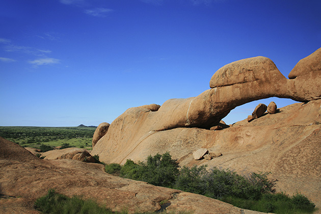

2001: A Space Odyssey
Main Content

Stanley Kubrick’s acknowledged classic, representing a giant step forward in the way space movies looked, was made mostly at MGM-British Studios in Borehamwood, Hertfordshire, southeast England. The studio closed in 1970 and has been demolished to be replaced by housing.
The first scenes to be filmed, though, the visit of Dr Heywood Floyd (William Sylvester) to the mysterious monolith on the moon, had to be shot at Shepperton Studios, southwest of London, where there was a soundstage large enough to accommodate the vast set.
The backgrounds for ‘The Dawn Of Man’ sequence were shot in Africa but, avoiding the cheesy look of back-projection, the perfectionist Kubrick came up with a sophisticated system of front projection using a screen 100 feet long and 40 feet tall. Notice how the director cleverly keeps the hominids in shadow against the dazzling background.
The landscape shots were filmed in Namibia, southwest Africa, the world’s second most sparsely populated country is famous for its desolate beauty – Namib actually means ‘open space’ in the Nama language.
The area is the Spitzkoppe Mountains (Spitzkoppe is German for ‘sharp head’), is a group of bald granite peaks, or bornhardts, between Usakos and Swakopmund in the Namib desert. The peaks stand out dramatically from the flat surrounding plains, the highest standing about 2,300 feet above the desert floor. The rock arch is the famous Grosse Spitzkoppe Bridge, 12 feet high and spanning 78 feet.
The spectacular landscapes can be seen again in Roland Emmerich’s wonderfully daft prehistoric fantasy 10,000BC.
The alien planet surface seen as Dave Bowman (Keir Dullea) passes through the Stargate are optically distorted shots of screen favourite Monument Valley, on the Arizona-Utah border north of Kayenta, and the rocky coastline of South Harris in the Outer Hebrides, Scotland.
Visit Info
Visit The Film Locations
Namibia
Visit: Namibia
Visit: Spitzkoppe
Visit: Grosse Spitzkuppe Nature Reserve
Arizona
Visit: Arizona
Monument Valley can be reached on Route 163, 24 miles north from the town of Kayenta, Route 160. There’s a visitor centre (admission charge; tel: 435.727.3353). A 14-mile loop snakes through the valley, but not all roads are open to the public. You can see more of the park on a guided tour, from the parking lot at the visitor center.